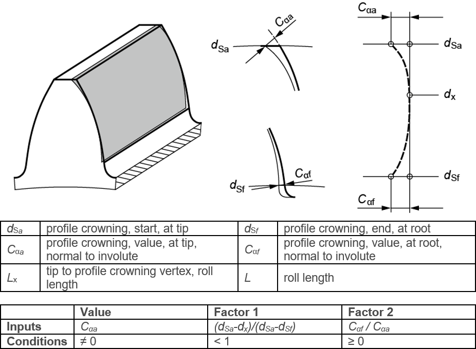

|
|
|


齿廓鼓形修整，偏心
图（见图15.44）显示了如齿廓图所定义的偏心齿廓鼓形修整。值、因子1 和 因子2 设置也显示在该图中。修形的起始点可在齿顶和齿根处设置，见 选项卡。
偏心齿廓鼓形修整类似于以直径为基准的齿廓鼓形修整。 因子1 用于调整鼓形修整的峰，因子2 用于调整根部的鼓形修整值。偏心齿廓鼓形修整会在齿高方向生成 2 个圆弧，一个用于齿顶，一个用于齿根。

图15.44：偏心齿廓鼓形修整
Profile crowning, eccentric
Figure (see Figure 15.44) shows the eccentric profile crowning as defined in the profile diagram. The Value, Factor 1 and Factor 2 settings are also shown in this figure. The start of the modification at the tip and root can be set in the tab.
Eccentric profile crowning is similar to diameter-centered profile crowning. Factor 1 is used to adjust the peak of the crowning and Factor 2 is used to adjust the value of the crowning at the root. Eccentric profile crowning results in the generation of 2 arcs of circle, one for the tip and one for the tooth root, in the direction of the tooth height.
Figure 15.44: Eccentric profile crowning